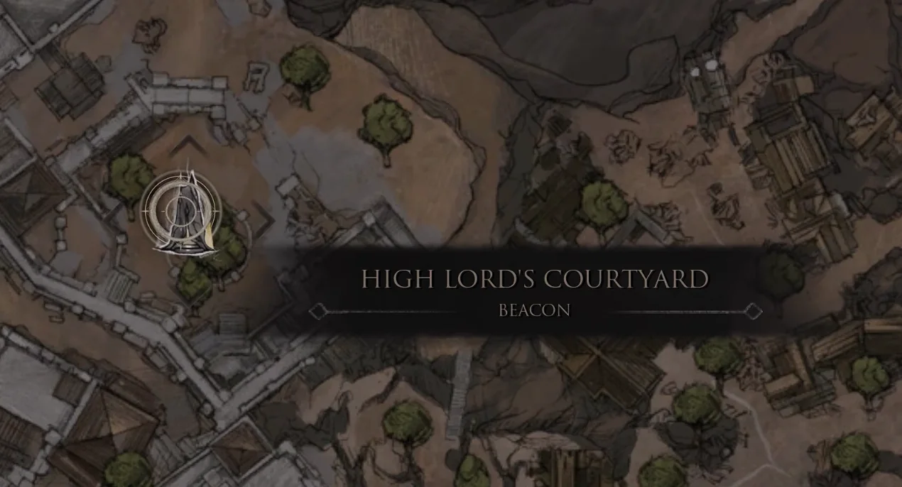
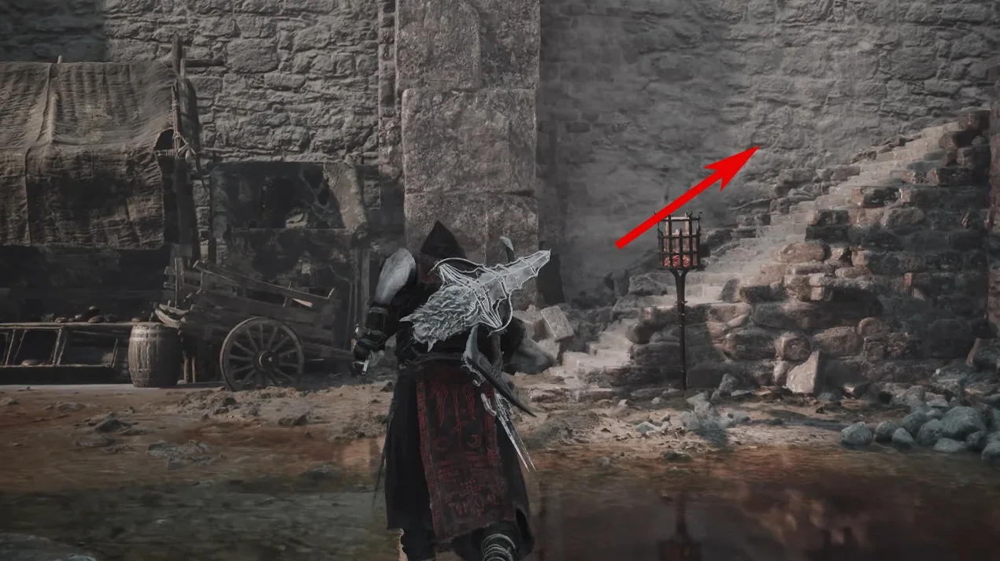
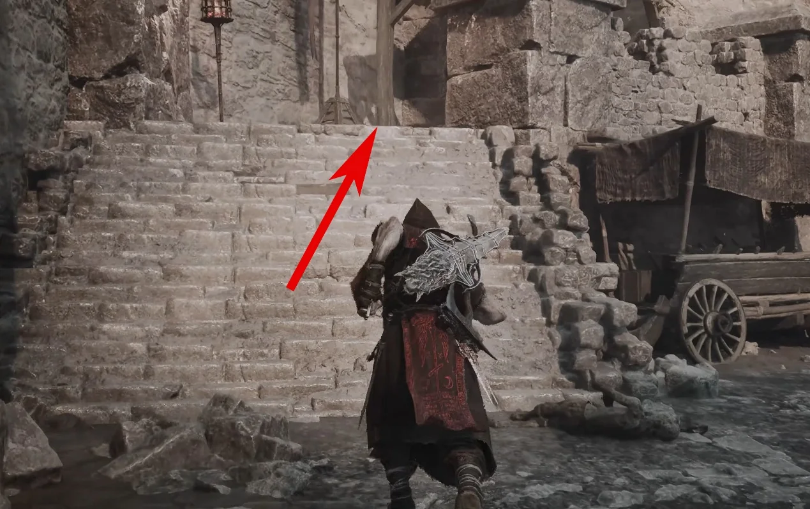
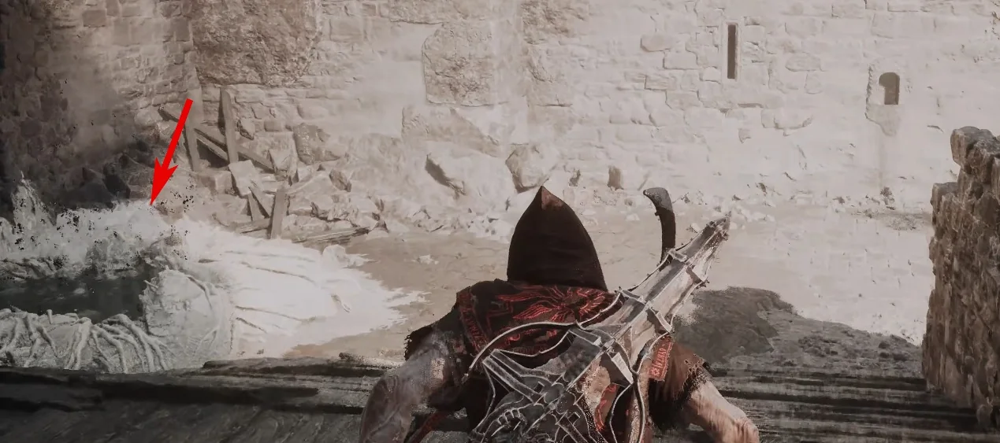
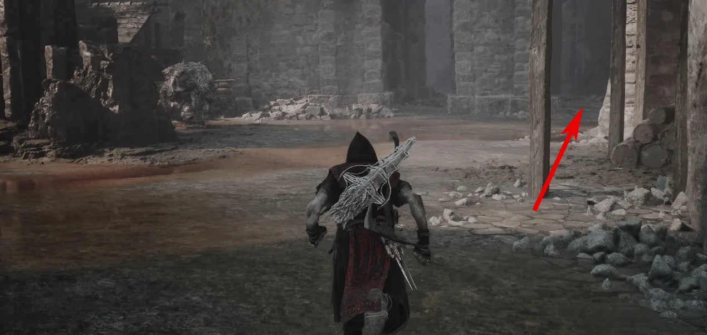
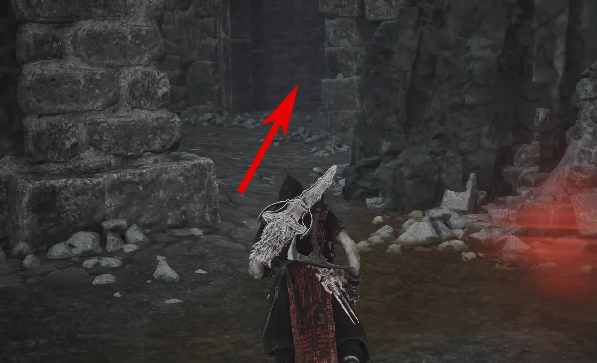
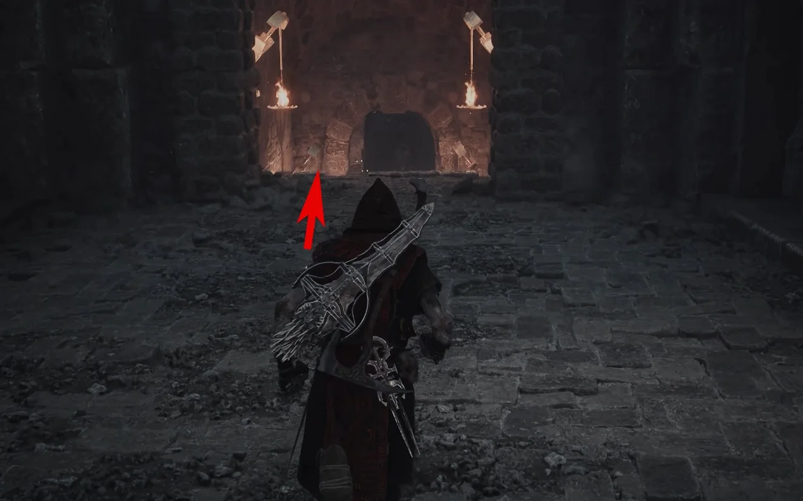
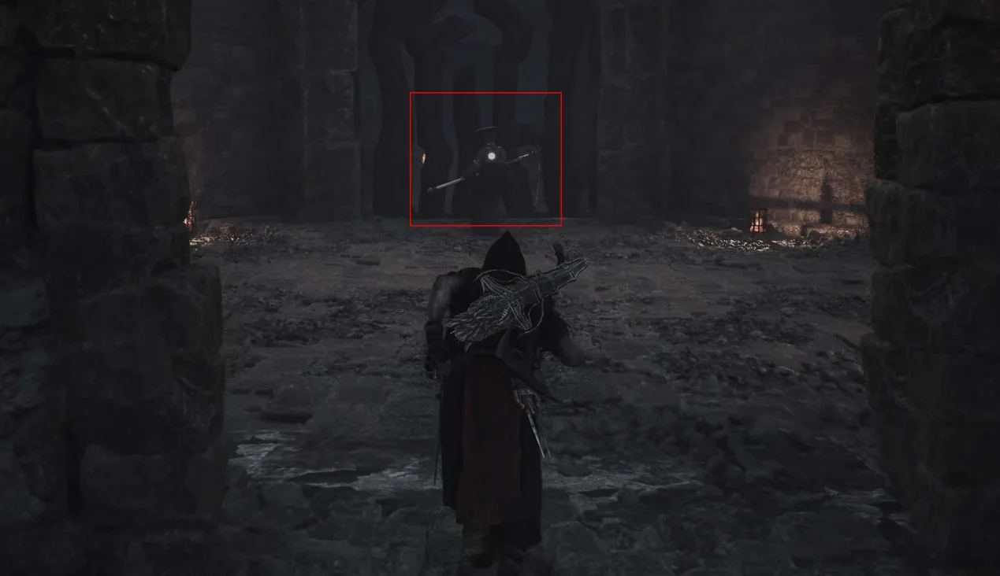
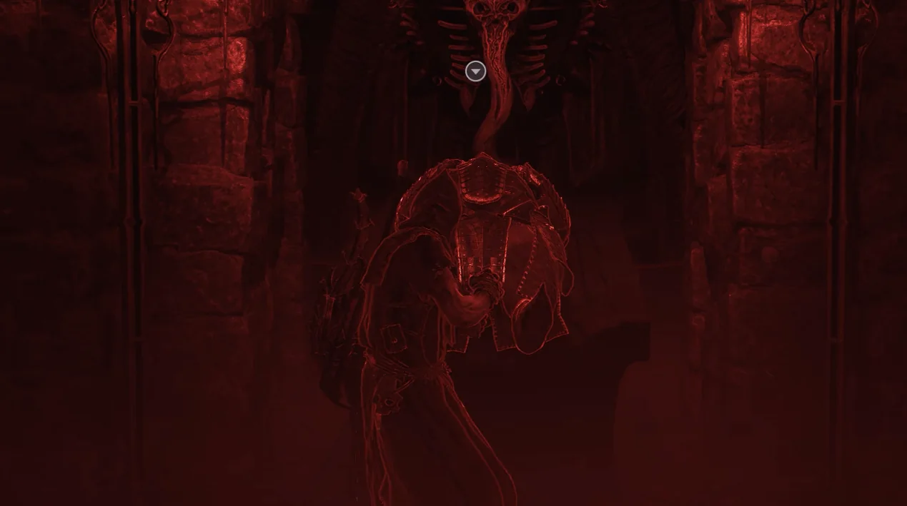
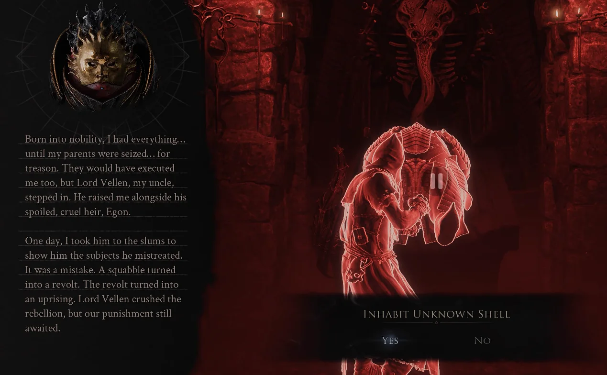

Shell acquisition · Mammon
How to get
Lazlo
Travel from High Lord's Courtyard Beacon to the Royal Crypt of Mammon, then defeat Vellon to open the path to Lazlo.
- Region
- Mammon
- Starting point
- High Lord's Courtyard Beacon
- Unlock
- Lazlo

Route 01Travel to High Lord's Courtyard Beacon.

Route 02From the Beacon, take the right-front route and climb the first marked staircase.

Route 03Continue directly onto the second staircase.

Route 04Exit the building and use the jump device on the left to reach the upper route.

Route 05After landing, move toward the left-front opening shown.

Route 06Turn toward the right-front passage and enter through the marked doorway.

Route 07Descend the stairs until you reach the Royal Crypt of Mammon.

Route 08Continue to the boss room and defeat Vellon.

Route 09Defeating Vellon opens the door. Go through it and interact with the waiting Shell.

Route 10Choose Inhabit Unknown Shell to unlock Lazlo.